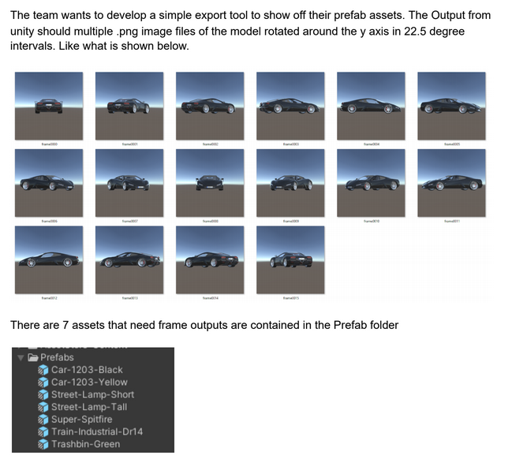

Self Projects
AudioSpectrum w/ Subwoofers
One day, I got curious to see if Unity could react with a range of values based of the Audio Source component. I decided to do a bit of research and to play around with the GetSpectrumData method that Unity has to offer.
Below is the outcome of some of the research that I did:
Interview Technical Test
This project was done as a technical test for a job I applied for and was done using the Unity engine and C#. The test was to get an object to rotate 22.5 degrees on the y axis and to export PNG files to a specfic folder. Even though I didn't get the job, I still was able to make it to the final round of the interview and gained some good coding feedback from the interviewer.
A link to the project can be found here
To do list...
- CyberSecurity - KeyLogger/Password Cracker
When time allows it...
- Custom Car Painting & Automotive Controller/Physics
When time allows it...